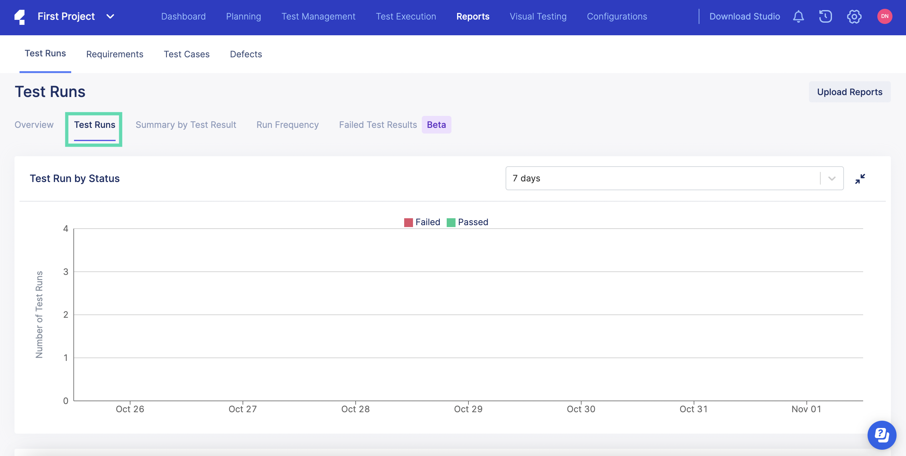
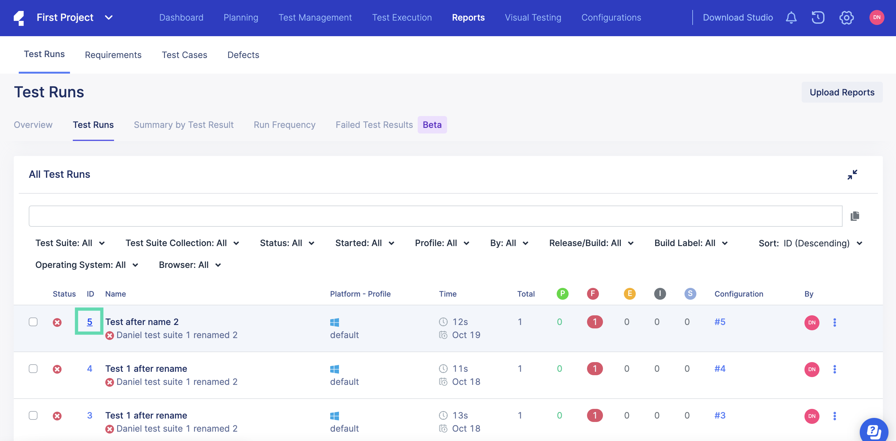
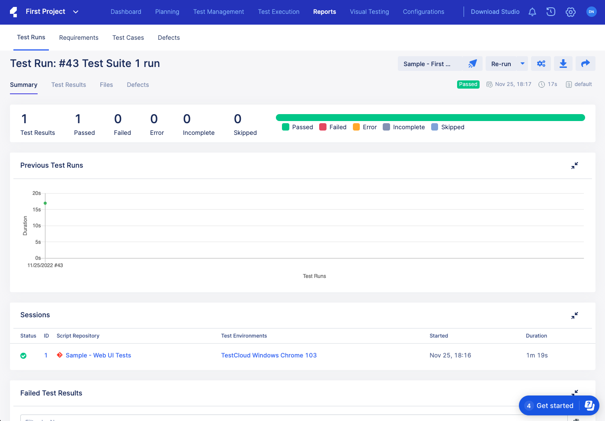
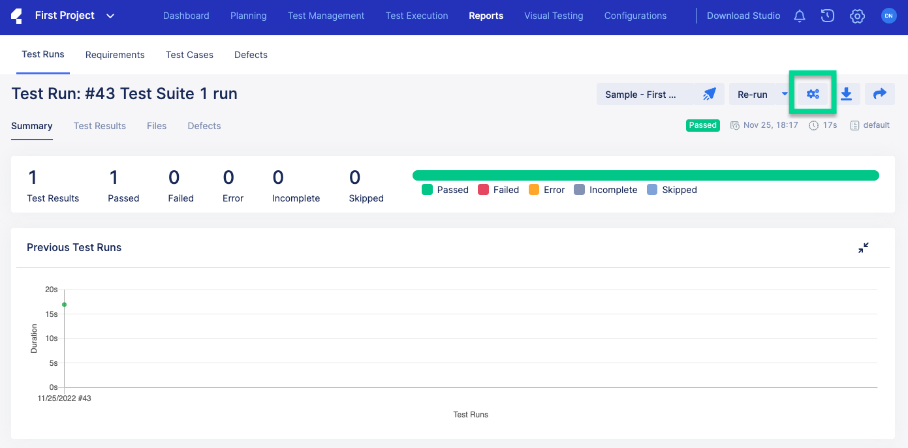
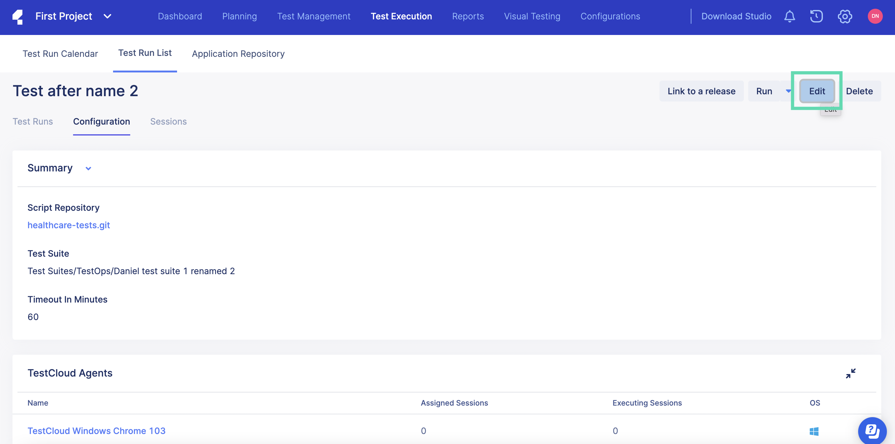
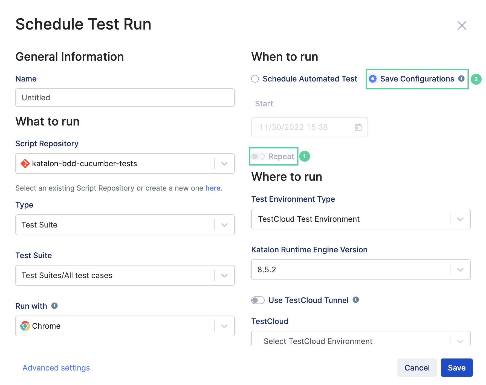

How to cancel scheduled Test Runs in TestOps
- Login to Katalon TestOps and go to your project. Go to Reports and select Test Runs > Test Runs.
- Scroll down to the All Test Runs section, and select the scheduled test run that you wish to cancel by clicking on the ID of that test run. The test run summary page appears as below:
- Open the configuration of the selected test run by clicking on the Configurations icon. 
- Click on Edit.The Scheduled Test Run dialog appears.
- In the Where to run section, toggle off the Repeat option and select Save Configurations instead of Schedule Automated Test.
- Click Save.